{kind=link}
{kind=link}

Copyright © 2008-2009 Spencer A. Buckner
Use, copying, modification, and distribution of the GSEGrafix plotting program are subject to the terms of the GNU General Public License, Version 3, or any later version published by the Free Software Foundation.
GSEGrafix is a GNOME application which uses an anti-aliased GNOME canvas for creating scientific and engineering plots. The program is written in C and reads ASCII plot-parameter files and data files. The plot-parameter files contain keywords and corresponding arguments for specifying plot parameters (such as data file names, data file formats, plot type, plot style, axis type, axis labels, etc).
GSEGrafix can make rectangular two-dimensional plots (with linear, semilog, or loglog axes), histograms, polar-axis plots, and three-dimensional plots (with linear axes). Three-dimensional plots include points, contour, color, and mesh plots. Data for three-dimensional plots can also be used to create two-dimensional plots using contour lines or color to represent values of a third variable.
A menu bar at the top of the plot window allows users to save the plot to a file, send the plot to a printer, copy the plot to the GNU/Linux clipboard, change the axis limits of the plot, change the orientation of three-dimensional plots, and display mouse coordinates in the lower left corner of the plot window for two-dimensional plots. Supported file formats for saving the plot to a file are bmp (Windows Bitmap), jpeg (Joint Photographic Experts Group), and png (Portable Network Graphics).
All plots include options to add minor tick marks, grid, legend, text, and date-time string to the plot. Additional images can be added to a plot by specifying image file names and desired locations on the plot. Rectangular two-dimensional plots include a zoom capability using the mouse to specify a rectangle on the plot to expand. Hidden lines are removed from three-dimensional mesh and contour plots unless specified otherwise. The program calculates "nice" tick-mark labels for all plots.
The program has two executables, gsegrafix and gsegraf. Running gsegrafix will display a window which can be used to choose a plot-parameter file. If the program's path is included in the PATH environment variable, type the name of the program, gsegrafix, and an ampersand (&) at the $ prompt to run the program in the background:
$ gsegrafix &
Click on the image below for the resulting full-size window:
If the program's path is not included in the PATH environment variable, the program can be run if its path is included in the command. When the GSEGrafix window appears, press the File button to choose a plot-parameter file. When a plot-parameter file is chosen, the gsegraf executable is run to create a window containing the plot. Click on the image below for a full-size example plot window:
The program can also be run by using either the gsegrafix or gsegraf command followed by the name of a plot-parameter file:
$ gsegrafix /home/sab/gsegrafix/param_files/sinc_param.txt &
or:
$ gsegraf /home/sab/gsegrafix/param_files/sinc_param.txt &
A help file can be displayed by using either the gsegrafix or gsegraf command followed by -h:
$ gsegrafix -h
or:
$ gsegraf -h
GSEGrafix can be run from an Octave program by calling an Octave function such as gsegraf_plot. This function writes a plot-parameter file and then uses gsegraf to create the corresponding plot. The first input to the function is the name of the plot-parameter file to be created. The remaining inputs are keyword-argument pairs to be written to the plot-parameter file. All inputs must be strings (enclosed in double quotes) and separated by commas. If all or part of an argument needs to be quoted in the plot-parameter file, the double-quote escape sequence (\") must be used for these additional quotes. An example of how to call gsegraf_plot is:
gsegraf_plot("./sinc_param.txt",
"file_name \"./sinc.txt\"",
"file_format \"%lf %lf\"",
"plot_type \"points\"",
"plot_style lk",
"axis_type \"linear\"",
"grid ls",
"xlabel \"x axis\"",
"ylabel \"y axis\"",
"title \"sin(x)/x\"");
GSEGrafix can be run from a C program by calling a C function such as gsegraf_C_plot. As described above for an Octave function, the C function writes a plot-parameter file and then uses gsegraf to create the corresponding plot. The only difference for calling the C function is that the list of keyword-argument pairs must be terminated with a NULL pointer:
gsegraf_C_plot("./sinc_param.txt",
"file_name \"./sinc.txt\"",
"file_format \"%lf %lf\"",
"plot_type \"points\"",
"plot_style lk",
"axis_type \"linear\"",
"grid ls",
"xlabel \"x axis\"",
"ylabel \"y axis\"",
"title \"sin(x)/x\"",
NULL);
A help file, gsegrafix.xhtml, is included with the program files. The help file describes keywords and associated arguments, formats for data files, program operation, and eleven example plots. Included with each example plot is the Octave or C code which generated the data files, and keywords and arguments contained in the corresponding plot-parameter file. The help file also contains a keyword summary which lists all keywords and their arguments.
Click on images for full-size example plots.
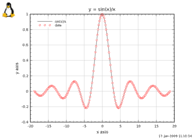 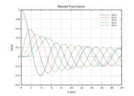 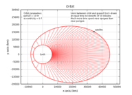 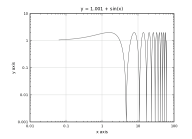 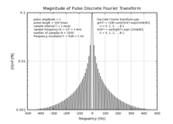 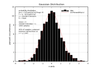 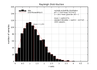 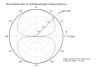 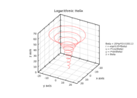 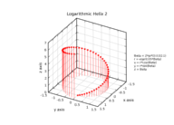 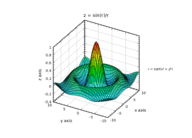 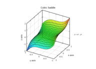 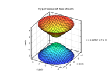 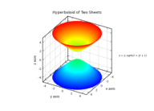 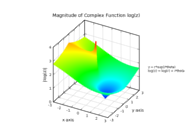
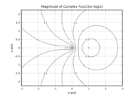
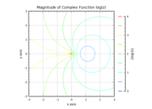
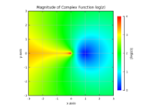
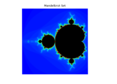
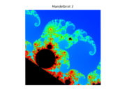
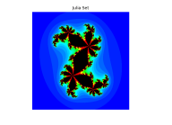